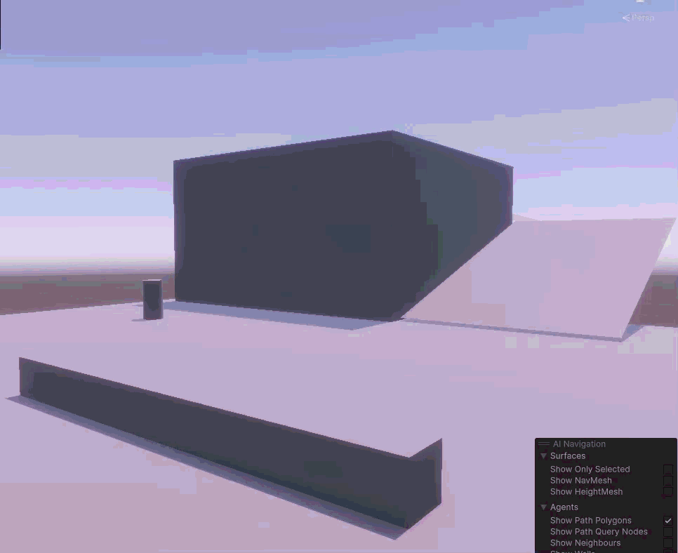
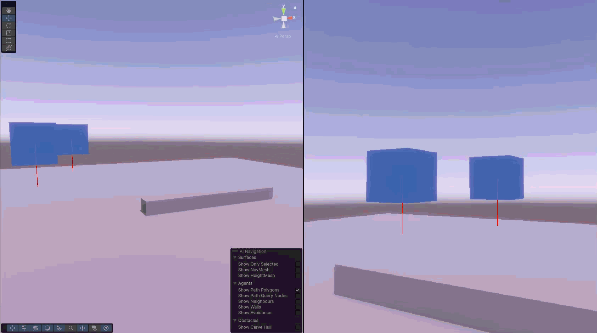

Terminal Glue is a project started as a personal project start by myself and my friend, Holly Allen, to improve and practice our game development skills. This project has been worked on off and on as our schedules have allowed. It is a Unity built First-Person Horror game designed with puzzle mechanics and controllable companions.
I am working on the narrative and level design of this project as well as programming and developing game mechanics, systems, and character movement alongside Holly.
Terminal Glue immerses the player as a Antique restorer that works out of an artist commune converted from what used to be an old military base with a small bug problem. Working late one night, the player discovers one of the antiques they are working on is an ancient artifact containing captured souls. Evil souls are released when the artifact cracks open along with a helpful companion soul that possesses the form a wooden artist's mannequin. The player explores the old military base solving puzzles by commanding their new companion, returning the escaped souls back to the artifact, and running from the termite monster created from the most wicked soul released.
For this project, I started off working on the character controller. We found a video on youtube showing an interesting way of floating the character capsule and allowing physics to handle falling recoil, walking over small objects, and keeping the player at the correct height while climbing slopes and stairs. This was something we wanted to try building ourselves.
I worked on our hover script that uses a downward raycast to set a target height for the player capsule to float. It uses opposing gravity and an upward spring force to level out the player when their elevation changes. This can be applied both to the player character as well as the companions they command.
The GIF to the right demonstrates how the hover allows the player to walk over small objects without needing to jump, climb slopes, and fall from heights while returning to the target height with some recoil.


Next, I worked on the player's ability to command companions. The player should be able to select a companion and click where they should move.
I used a forward raycast to select 3D objects in the scene and click anywhere on the ground for them to move in a straight line towards. Thanks to the hover script, there is no need to pathfind around small objects on the floor. However, walls and larger objects will need to be pathed around.
The GIF to the left demonstrates the player selecting an object and clicking where it should move.
Next step was to implement A* pathfinding into the companion movement to allow objects to navigate the levels.
This was my first time implementing A* in a 3D environment. I have had success many times in 2D games. However, this gave me a lot of trouble. While I believe my A* code would work correctly, it crashes the game. I have been looking into ways of fixing this. Either multi-threading to reduce the time needed to calculate the path in real time, or I may need to re-evaluate how A* is implemented when accomodating for a 3D environment.
This is where I last left off while working on this project
Feel free to contact me through my Email and LinkedIn. You can visit my ArtStation profile or my GitHub profile